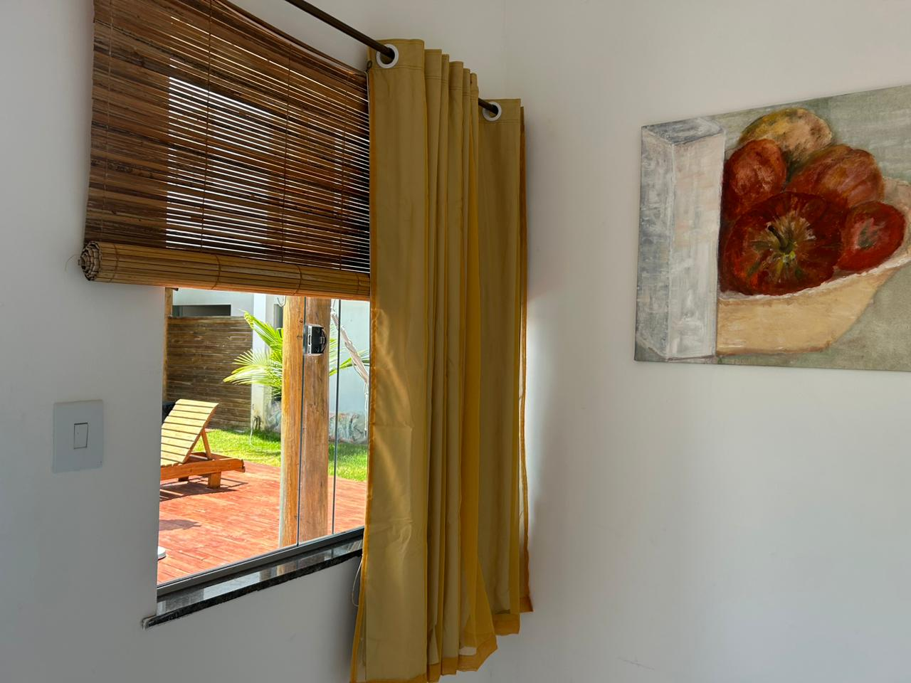
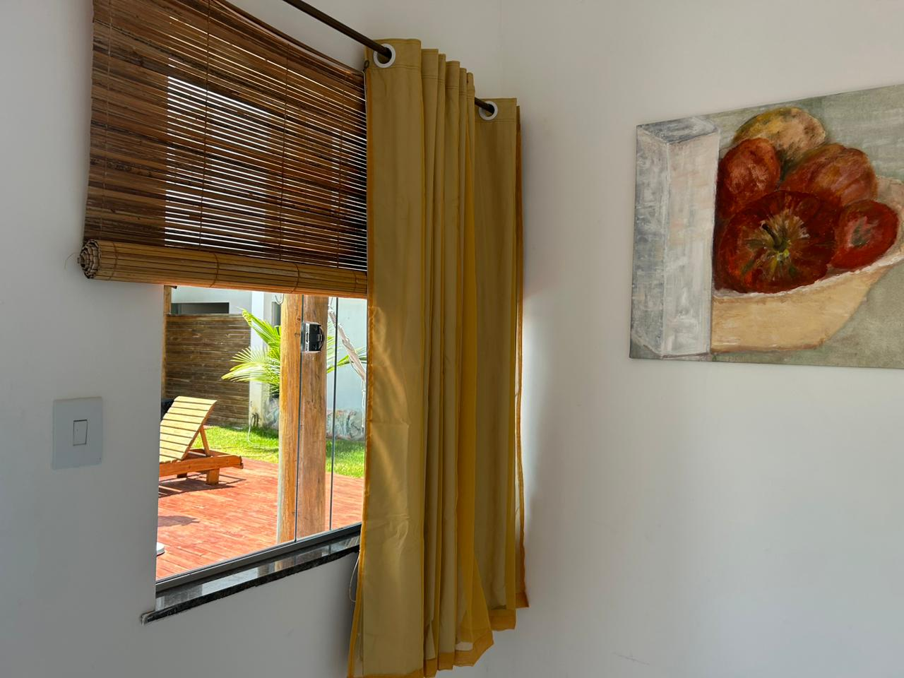
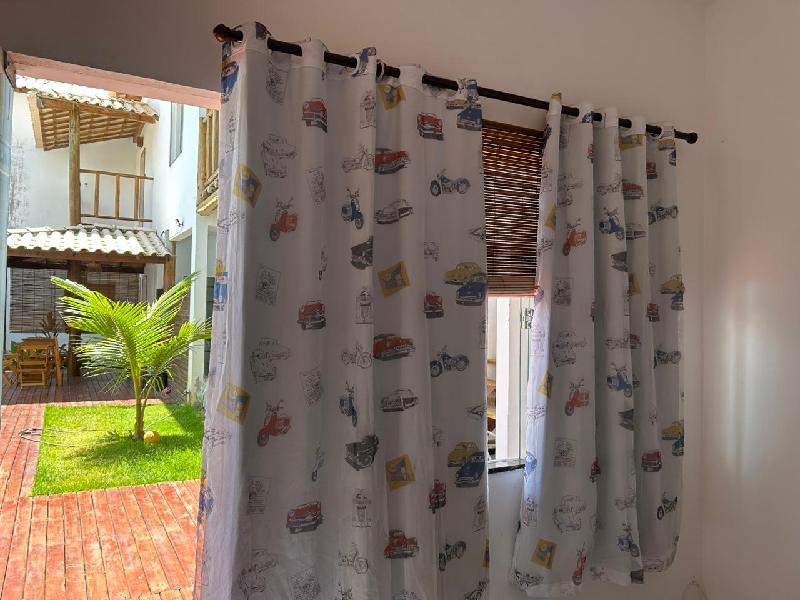
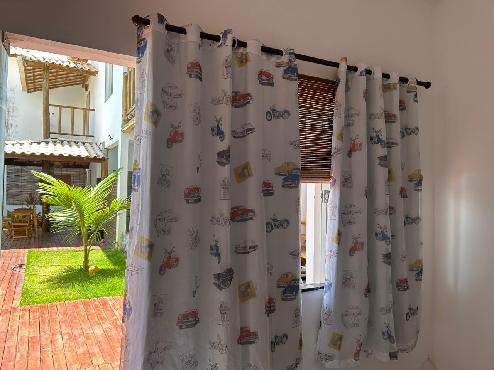

Experiência Inesquecível
Prepare-se para ter uma experiência com a natureza,conforto de
cidade, em um ambiente familiar agradável.
Memórias inesquecíveis são criadas neste cenário
tropical.
A pousada Obedemar esta localizada, a apenas 1 km da praia
famosa da Península de Marau, Taipu de Fora, com suas piscinas
naturais, areia branca e água do mar transparente.
Reservas
+55 73 99855 9689

.jpeg)
Acomodações

.jpeg)

.jpeg)

 

 

Infraestrutura
Nossa infraestrutura foi projetada/pensada para oferecer estadia confortável aos nossos clientes. A piscina, as espreguiçadeiras, guarda-sóis foram disponibilizadas afim d os clientes desfrutassem principalmente a tarde, onde o sol se posiciona sobre a mesma-tornando-a “quentinha”, após desfrutarem de manhã, as maravilhosas piscinas naturais ou ondas para surfar. A integração da infraestrutura colabora para os hóspedes troquem conversas e se conheçam.. A área verde ao redor da pousada transmite uma sensação de paz.. também foi planejada à disposição de vãos para que o vento natural transpassasse a pousada para oferecer frescor, no calor natural das praias baianas.
Mais informações
+55 73 99855 9689


Serviços

Sustentabilidade
Temos instalado painéis solares que geram energia a ser utilizada em toda pousada, o excedente e disponibilizado a companhia de energia da Bahia.
Estacionamento
Temos um estacionamento privativo para hospedes.
Café da Manhã
Oferecemos uma grande variedade de: sucos, bolos, pães, ovos mexidos, bolinho de tapioca, frutas e etc, oferecidos a beira da piscina.
Internet
Temos wi-fi de alta velocidade, disponível a toda pousada.
Piscina
Temos piscina com deck com: espreguiçadeiras, guarda-sol, cadeiras, hidromassagem, chuveiro e cascata. A piscina tem degraus que permitem uso de crianças pequenas.
Venda de: água e geladinho gourmet
Temos a venda: água e geladinho gourmet
Depoimento
O que nossos clientes dizem?
Excelente experiência!!
A pousada é simples, mas com tudo que você precisa, e ainda conta com uma piscina deliciosa e limpa, excelente para se refrescar no final do dia! A Alda é nota 1000, muito atenciosa e dedicada, te deixa muito a vontade e está sempre disponível. Também gostamos muito da localização, fica em Taipu de Fora (~4km da Barra), muito perto das piscinas naturais (não se esqueça de olhar a tábua da maré). Próximo da pousada tem alguns restaurantes que vale a pena conhecer a pé, ... Recomendamos!